Reference: pages
Reference
Pink Fiber Cable
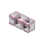
encodedlogistics:pink_fiber_cable · Block · Stacks to 64 · Creative tab: Encoded Logistics: Cables
Pink Fiber Cable: a Fiber Cable (lanes.perFiberCable (default 32) lanes, with span loss on long runs) that connects only to cables of its own colour and to neutral ones. Use a dye on a placed cable to recolour it, or a water bucket to wash it back to neutral.
Pink Fiber Cable
Shift: Carries 32 lanes in a slim cable.
Works with
How to get it
encodedlogistics:pink_fiber_cable
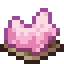
encodedlogistics:pink_fiber_cable_from_dye
Used to make
- Blue Fiber Cable
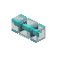
Cyan Fiber Cable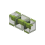
Green Fiber Cable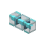
Light Blue Fiber Cable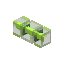
Lime Fiber Cable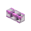
Magenta Fiber Cable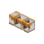
Orange Fiber Cable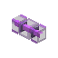
Purple Fiber Cable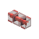
Red Fiber Cable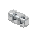
White Fiber Cable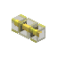
Yellow Fiber Cable
As a block
| Hardness | 0.5 |
|---|---|
| Blast resistance | 1 |
| Tool | any |
| Light level | 0 in its default state |
Tags
#encodedlogistics:fiber_cables
Where it's documented
- Cables (Networks)